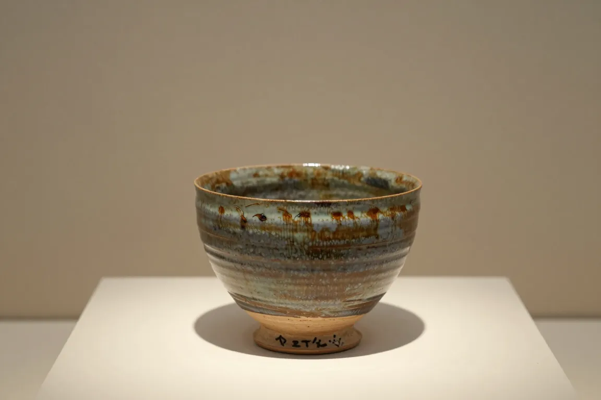

Британская студийная керамика, которую Бернард Лич начал в Сент-Айвс в 1920 году. Гончар делал высокотемпературную каменную керамику вручную, с зольными и железными глазурями по образцу китайских, корейских и японских горшков.

Главная идея
Хороший горшок соединяет простую красоту восточноазиатской каменной керамики с английским ремеслом одного человека, который лепит, глазурует и обжигает его.
Принципы дизайна
Делайте каждый горшок одним гончаром от глины до печи и подписывайте печатью.
Вытачивайте форму на круге простой: круглое брюшко, твёрдый поддон и толстый край.
Срезайте поддон с чёткой фаской 3–5 мм и оставляйте часть голой.
Берите зольные глазури, тэммоку и селадон, обжигайте высоко в восстановлении при 1280–1300 °C.
Расписывайте железом или кобальтом несколькими мазками кисти: лист, рыба, птица.
Обжигайте в дровяной ступенчатой печи с долгим восстановлением; принимайте возникающие вариации.
Держите цвет в коричневых, зелёных и серых тонах земли.
Сначала делайте полезные горшки: миски, бутылки и банки для стола.
Антипаттерны
Совершенная машинно-ровная форма
Яркий, глянцевый или пастельный цвет
Золотая линия или печатный узор
Тонкий фарфор с прозрачной глазурью
Керамика, сделанная лишь для вида деревенской, без мастерства